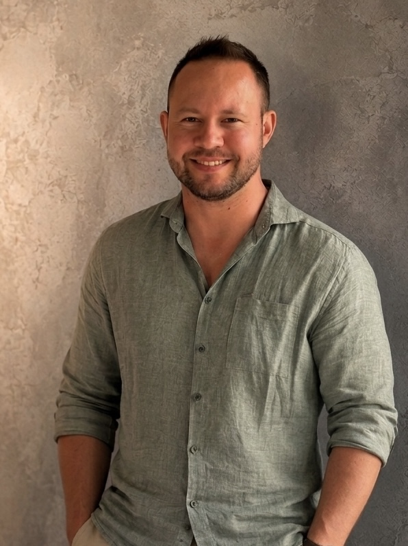

Tischler & CNC-Programmierer
Holz, Maschinen.
Und die Programme dazu.
Ich bin Yannick. Seit 2011 arbeite ich bei F-List in Thomasberg, seit 2019 in der CNC-Programmierung mit CATIA und NC Hops.
Von der Maschine an den Bildschirm.
Bevor ich CNC-Programme geschrieben habe, habe ich selbst Maschinen gerüstet und ein Team geleitet. Diese Erfahrung hilft mir heute bei der Abstimmung mit Konstruktion und Fertigung.

Mehr über michVom Maschinisten zum Programmierer
Bei Puchegger & Jilg begonnen, bei F-List zum CNC-Programmierer mit Führungserfahrung gewachsen.
2. SkillsCATIA, NC Hops & Co.
CNC-Programmierung, Lean-Methoden wie Kaizen und 5S, Teamführung — und der Umgang mit modernen Werkzeugen.
3. Über michMehr über mich
Wie ich zur CNC-Programmierung gekommen bin. Und was ich mache, wenn der Bildschirm aus ist.
4. ProjekteMeine Freizeitprojekte
Eine Teile-Suche für die Arbeit und eine Lern-App für Kinder. Kleine Projekte, die ich in meiner Freizeit umsetze.